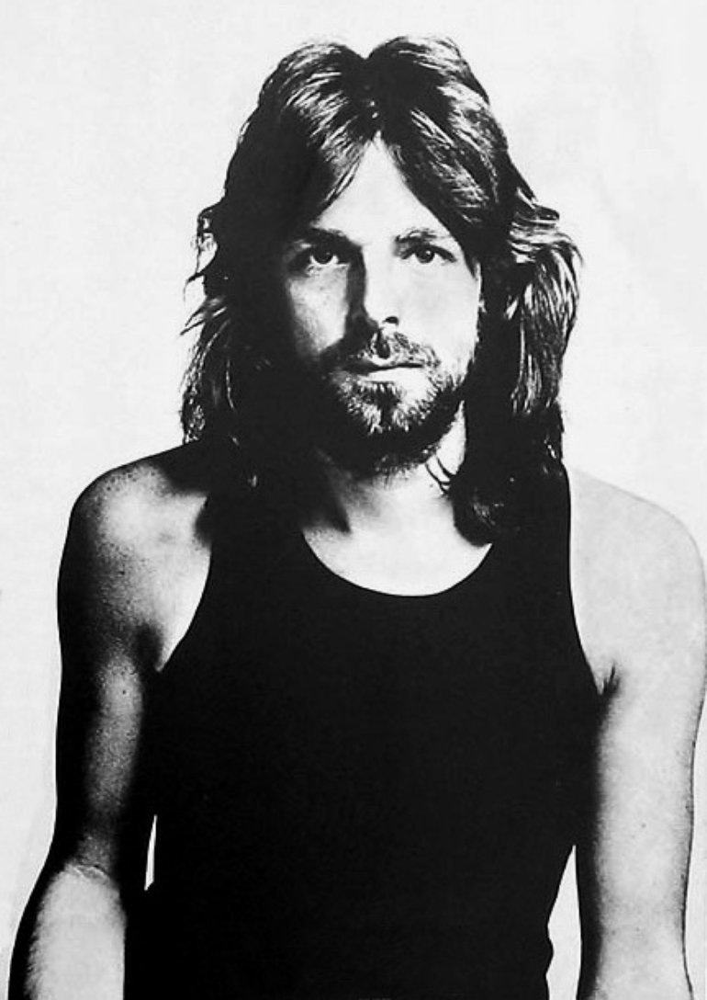

Richard Wright

Entrou para a escola particular Harberdashers, e aos 20 anos foi para a Escola de Arquitetura. Lá conheceu o baixista Roger Waters e o baterista Nick Mason. Fizeram um grupo na faculdade e escolheram seis meses depois Syd Barrett para a guitarra. O único nascido em Londres entre os integrantes do Pink Floyd, Richard Wright sempre foi o terceiro compositor e vocalista do grupo, tal como como George Harrison nos Beatles, John Entwistle no The Who e John Paul Jones no Led Zeppelin. Wright não possuía técnica comparável aos demais tecladistas britânicos que também despontaram entre os anos 60 e 70, porém compensava a desvantagem se valendo de grande criatividade na criação de texturas com os instrumentos que utilizava. Como compositor contribuía com duas ou três músicas por álbum, ou colaborava na estruturação de obras coletivas como "Echoes" ou "Time". Dark Side of the Moon (1973) representa seu ápice no Pink Floyd: os teclados se equiparam a guitarra de David Gilmour e participou na composição de cinco das dez músicas. Em Wish You Were Here (1975), onde seus teclados estão onipresentes, Wright trouxe grandes contribuições para o álbum, sobretudo na suíte "Shine On You Crazy Diamond". A partir do disco Animals (1977) iniciou-se o processo de domínio do Pink Floyd por Roger Waters, apesar de neste disco Rick Wright ter realizado um competente trabalho no comando dos teclados da banda. O sucesso começou a afetar as relações pessoais dentro do grupo. Trabalhos solo eram a única saída para os demais integrantes da banda e Wright realizou Wet Dream em 1978, acompanhado por Mel Collins (sax), Snowy Whithe (guitarra), Larry Steele (baixo) e Reg Isadore (bateria). Quando o Pink Floyd iniciou as gravações de The Wall, em 1979, Roger Waters tinha assumido o total controle da banda. Rick Wright foi afastado do processo de criação e concepção, o que culminou com sua expulsão da banda durante as gravações de The Wall, apesar de mais tarde participar dos shows. Não obstante o controle de Waters, os acontecimentos que culminaram na saída de Wright são envoltos em mistério. David Gilmour mais tarde chegou a declarar em entrevista que precisou tocar muitos dos teclados de The Wall devido a falta de empenho de Rick. Depois da saída do Pink Floyd, Wright juntou-se com Dave Harris no grupo chamado "Zee" e gravaram "Identity" em 1984. O retorno de Wright ao Pink Floyd se deu em 1987, nas gravações de A Momentary Lapse Of Reason. Ele chegou no meio das gravações, ocasião em que não trouxe contribuição relevante para o álbum, mas participou da turnê mundial de promoção do disco. Rick em um concerto em Munique, 2006. Já em The Division Bell, Rick Wright voltou a participar ativamente do processo criativo, retomando-se a cooperação coletiva que se havia perdido nos anos 70. Wright é co-autor de "Wearing the Inside Out" com Anthony Moore e das músicas "Cluster One", "What Do You Want From Me", "Marooned", e "Keep Talking" com David Gilmour. Em 1996 Rick Wright lançou seu terceiro álbum, Broken China, gravada no estúdio da sua casa na França. Ele mesmo produziu o disco, junto com Anthony Moore, que também escreveu as letras. Foi mixado por James Guthrie. Participam deste álbum os guitarristas Tim Renwick, Dominic Miller e Steve Bolton, o baterista Manu Katche e o baixista Pino Palladino. E mais, Sinead O'Connor canta em duas faixas - "Reaching for the Rail" e "Breakthrough". Apesar do papel coadjuvante, é quase consenso entre antigos fãs que os teclados e voz de Richard Wright apresentavam-se como elemento fundamental para a constituição do som do Pink Floyd. Morreu em sua casa em Londres, em 15 de setembro de 2008, a informação foi revelada por um porta-voz do grupo, e em seguida, divulgada expressamente no web-site da banda. Wright estava com 65 anos e sofria de câncer.[1][2] A morte de Richard acabou com as possíveis esperanças de o Pink Floyd retornar. No entanto, em 5 de julho de 2014, Polly Samson, mulher de David Gilmour, afirmou em seu Twitter que o Pink Floyd estava lançando um novo álbum em outubro chamado "The Endless River", menção ao penúltimo verso da música High Hopes (do álbum The Division Bell), e que esse novo álbum teria a "Canção do cisne" de Rick, uma expressão usada descrever o esforço final para um ato magnifico que precede a morte de alguém.